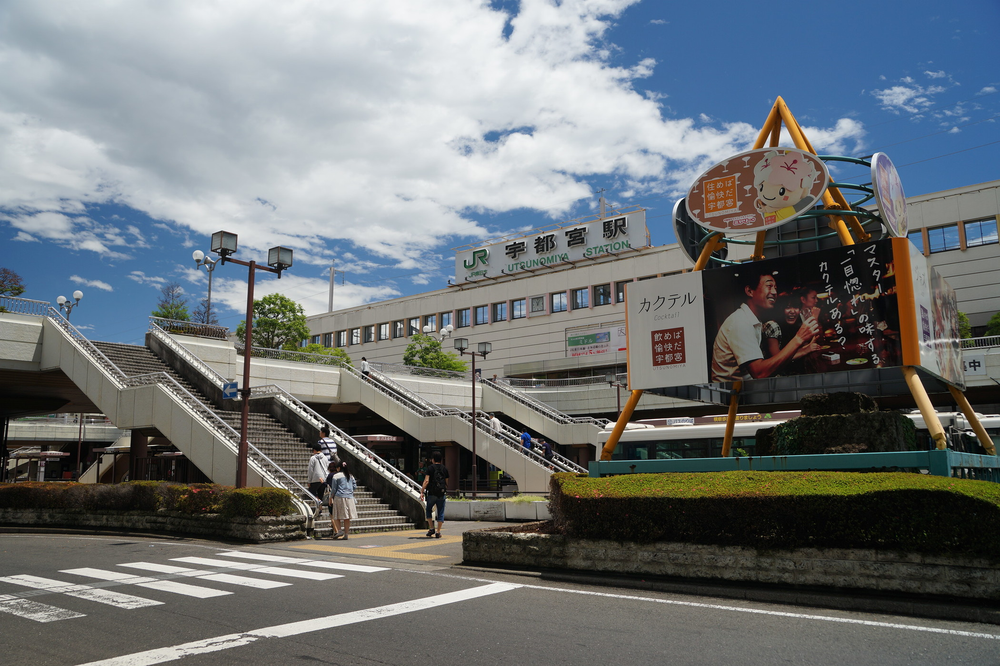
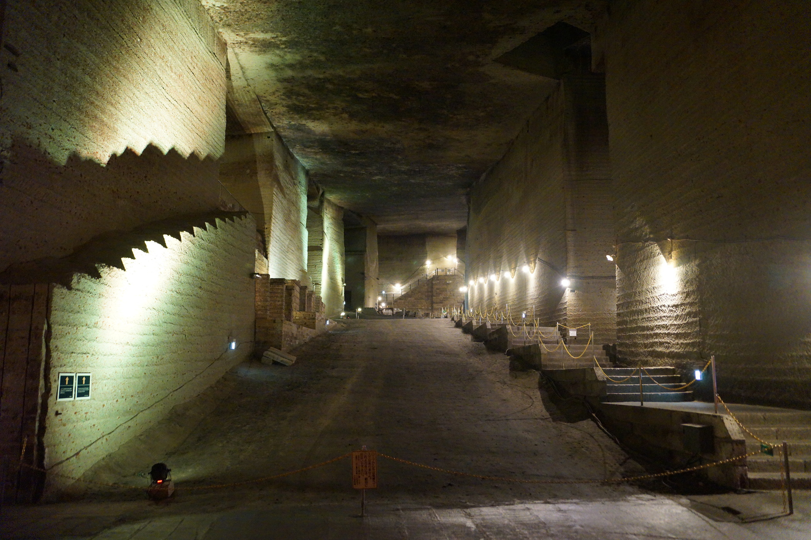
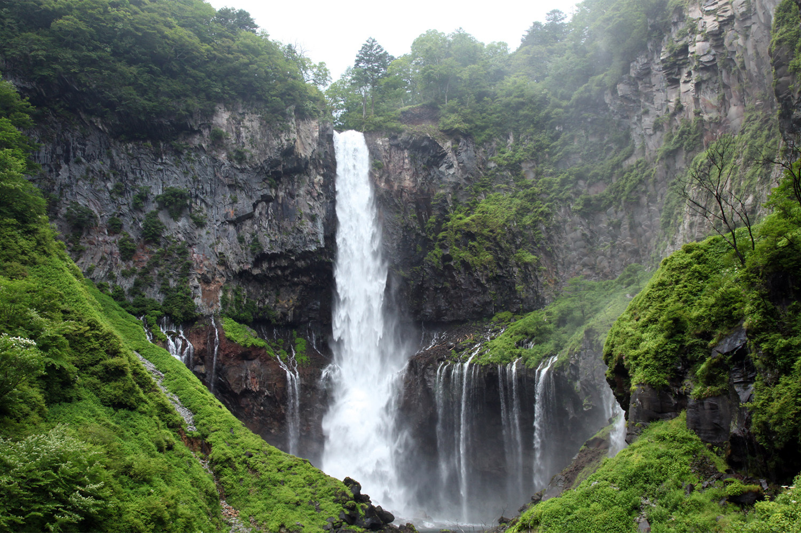

栃木旅行プラン
栃木での楽しい1泊2日の旅行プランをご紹介します。観光名所を巡りながら、美味しい食事やリラックスできるスポットを満喫しましょう！
9:00
宇都宮駅
宇都宮駅から観光スタート！
写真提供：（公社）栃木県観光物産協会
9:30
栃木県防災館（宇都宮市）
地震や火災などのシミュレーションができる防災施設です。
11:00
大谷資料館（宇都宮市）
巨大な地下空間が広がる採掘場跡を見学。映画やドラマの撮影地としても有名です！
写真提供：（公社）栃木県観光物産協会
12:30
昼食（宇都宮市）
宇都宮の有名餃子店で餃子を堪能！いろいろな餃子を食べ比べでみましょう！
14:00
日光東照宮
世界遺産の日光東照宮を見学しましょう。有名な「三猿」や「眠り猫」をチェック！
16:30
華厳の滝
栃木県を代表する名瀑です！大迫力の景観は見ごたえ抜群！
写真提供：（公社）栃木県観光物産協会